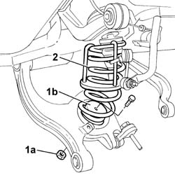
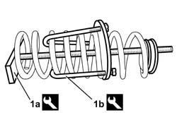
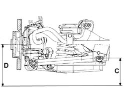

4440K40 Rear suspension COIL SPRING - R.R.
- Path
- Procedures > 44 SUSPENSION AND WHEELS > 4440 INTELLIGENT SUSPENSION > 4440K INTELLIGENT SUSPENSION REAR SHOCK ABSORBERS AND SPRINGS > 4440K40 Rear suspension COIL SPRING - R.R.
- Kind
- repair procedure (removal / refitting; the operation number is the code)
- Applies to
- all engines; all production periods
- Interactive page
- https://sloeber94.github.io/elrnDB-lThss/en/#/180182
Applies to: all engines; all production periods
 Removing
Removing
 Refitting
Refitting- Position the vehicle on a lift.
- Disconnect the negative battery terminal.
See in Op. 7040B10 LOAD CARRYING COMPARTMENT LINING - R.R.
See in Op. 7040B17 Luggage compartment/load platform side trim flap (one) - Replace
See in Op. 7040B13 Luggage compartment/load platform SIDE LINING - R.R.
See in Op. 4450B11 Rear WHEEL (one) - R.R.
See in Op. 7055B43 REAR WHEEL ARCH LINER (one), left or right - R.R.
See in Op. 4440K30 LEFT OR RIGHT REAR INTELLIGENT SUSPENSION SHOCK ABSORBER (ONE) - R.R.
See in Op. 3310B36 REAR BRAKE CALIPER (one), left or right - R.R.
See in Op. 3310B48 REAR BRAKE DISC (one), left or right - R.R.
See in Op. 4450D10 Rear wheel HUB, left or right - R.R. with wheel removed
See in Op. 3310B59 Rear brake DISC GUARD (one), left or right- R.R.
1. Undo the fixing nut (1a) and release the buffer (1b) from the track control arm.
2. Remove the spring from the housing complete with compression tool.

Applies to: all engines; all production periods
1. If the spring is being replaced, fit the tool (1a), remove the tool (1b) arms fitted previously to compress the spring then, acting on the tool nut, extend the spring slowly and gradually.
 | Description | Code | Function |
|---|---|---|---|
1a | Extractor - fitting tool | 1.870.829.000 | Compress and decompress the rear suspension coil springs on the vehicle |
| Description | Code | Function |
|---|---|---|---|
1b | Extractor - fitting tool | 1.870.829.000 | Compress and decompress the rear suspension coil springs at the bench |

Applies to: all engines; all production periods
Refitting
Removing- Fit the tool for compressing the spring at the bench.
| Description | Code | Function |
|---|---|---|---|
. | Extractor - fitting tool | 1.870.829.000 | Compress and decompress the rear suspension coil springs at the bench |
- Compress the spring until its length is such that the tool with arms for maintaining the compression can be fitted and then fit it on the vehicle.
| Description | Code | Function |
|---|---|---|---|
. | Extractor - fitting tool | 1.870.829.000 | Compress and decompress the rear suspension coil springs on the vehicle |
- Fit the spring in the special housing in the track control arm, position it by rotating it until the spring is in contact with the top part and tighten the nut fixing the lower spring buffer to the track control arm.
See in Op. 3310B59 Rear brake DISC GUARD (one), left or right- R.R.
See in Op. 4450D10 Rear wheel HUB, left or right - R.R. with wheel removed
See in Op. 3310B48 REAR BRAKE DISC (one), left or right - R.R.
See in Op. 3310B36 REAR BRAKE CALIPER (one), left or right - R.R.
See in Op. 4440K30 LEFT OR RIGHT REAR INTELLIGENT SUSPENSION SHOCK ABSORBER (ONE) - R.R.
See in Op. 7055B43 REAR WHEEL ARCH LINER (one), left or right - R.R.
See in Op. 4450B11 Rear WHEEL (one) - R.R.
See in Op. 7040B13 Luggage compartment/load platform SIDE LINING - R.R.
See in Op. 7040B17 Luggage compartment/load platform side trim flap (one) - Replace
See in Op. 7040B10 LOAD CARRYING COMPARTMENT LINING - R.R.
- Place the vehicle in Standard "A" conditions, in other words with the vehicle mass complete, spare wheel, tool kit, all supplies and accessories (oil, engine coolant, etc.) and a full fuel tank.
- Check that the tyre inflation pressure is correct.
- Position the vehicle on a support so that the wheels are resting on the ground
Applies to: engines: 2.4 20V; all production periods
- Check that after the vehicle has been placed in standard "A" conditions, the measurement "D"-"C" corresponds to the figure given in the table below.
 | Subject | Value |
|---|---|---|
. | Rear wheel geometry | mm |
- | D - C | 21 ± 5 |
- | Standard A | - |

Applies to: engines: 2.4 JTD 10V; all production periods
- Check that after the vehicle has been placed in standard "A" conditions, the measurement "D"-"C" corresponds to the figure given in the table below.
| Subject | Value |
|---|---|---|
. | Rear wheel geometry | mm |
- | D - C | 21 ± 5 |
- | Standard A | - |
Applies to: engines: 3.0 V6, 3.2 V6; all production periods
- Check that after the vehicle has been placed in standard "A" conditions, the measurement "D"-"C" corresponds to the figure given in the table below.
| Subject | Value |
|---|---|---|
. | Rear wheel geometry | mm |
- | D - C | 21 ± 5 |
- | Standard A | - |
Applies to: engines: 2.0 TB; all production periods
- Check that after the vehicle has been placed in standard "A" conditions, the measurement "D"-"C" corresponds to the figure given in the table below.
| Subject | Value |
|---|---|---|
. | Rear wheel geometry | mm |
- | D - C | 21 ± 5 |
- | Standard A | - |
Applies to: engines: 2.4 JTD 20V; all production periods
- Check that after the vehicle has been placed in standard "A" conditions, the measurement "D"-"C" corresponds to the figure given in the table below.
| Subject | Value |
|---|---|---|
. | Rear wheel geometry | mm |
- | D - C | 21 ± 5 |
- | Standard A | - |
Topics linked from this page (11)
- 3310B36 REAR BRAKE CALIPER (one), left or right - R.R.
- 3310B48 REAR BRAKE DISC (one), left or right - R.R.
- 3310B59 Rear brake DISC GUARD (one), left or right- R.R.
- 4440K30 LEFT OR RIGHT REAR INTELLIGENT SUSPENSION SHOCK ABSORBER (ONE) - R.R.
- 4450B11 Rear WHEEL (one) - R.R.
- 4450D10 Rear wheel HUB, left or right - R.R. with wheel removed
- 4450D15 Rear wheel hub STUB AXLE, left or right - R.R. Including replacement of bush, if necessary
- 7040B10 LOAD CARRYING COMPARTMENT LINING - R.R.
- 7040B13 Luggage compartment/load platform SIDE LINING - R.R.
- 7040B17 Luggage compartment/load platform side trim flap (one) - Replace
- 7055B43 REAR WHEEL ARCH LINER (one), left or right - R.R.